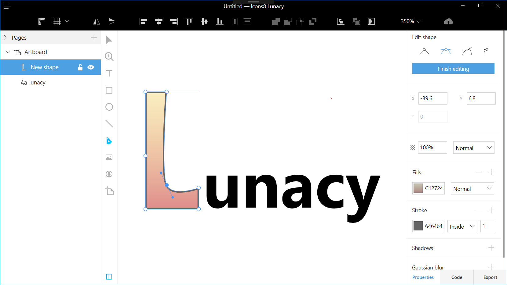

Release History
New features and fixes for each version of Lunacy
Version 8
8.8 (Beta)
Release date: October 30, 2022
Download beta:
Import from Figma
Now you can import Figma documents to Lunacy. For this:
- Go to the Home tab.
- Click Import from Figma. The document import screen opens.
- If your Figma document is public, paste the link to it and click Import. Otherwise, you’ll also have to define the access token.
Lunacy will import your Figma document as a cloud document. If you want, you can save it as local.
More cloud servers
We’ve increased the number of our servers throughout the world. Now, they are available in:
- Europe
- North America
- South America
- South Africa
- Australia
- Japan
- India
- China (Hong Kong)
Upon start, Lunacy automatically picks the server with the best latency.
Team Subscription
Now, you can subscribe to the Lunacy Cloud Team Plan and get:
- Unlimited number of team documents
- Unlimited version history
- Unlimited thrash storage period
- Free personal cloud license for the team owner
For details about teamwork in Lunacy, read here.
Custom Nudge Amount
Nudging is moving layers with arrow keys. By default, Lunacy nudges a layer by 1 px when you press an arrow key (small nudge), or by 10 px when you press an arrow key holding down Shift (big nudge). Now, you can define custom values.
For this:
- Deselect all layers on the canvas (press
Escor click over an empty canvas area). - In the Nudge Amount section of the right panel, specify the required values.
Reworked text generation
We removed the text generation control from the text settings in the right panel. Text snippets also no longer work.
Instead, now when you click over the canvas to create a text block or delete everything in an existing text block, you see an auto-text dropdown. You can scroll the list, to select the required option. Or you can just start typing the name of the option you need. For example, if you need a name of a person, or username, or file name, start typing “name” and you’ll see all the matching options. Click the one you need to apply.
Also, text blocks with auto-generated content, similarly to avatars, now come with a refresh icon above the upper-left corner. By clicking it you can choose the text that suits you best.
As you might know, Lunacy automatically updates auto-generated content upon duplication. You can disable it in Layer > Content Generation > Auto refresh.
If you need to keep auto refresh working, but want to preserve some layers with generated content unchanged, right click over such a layer and select Detach from Generated Content on the context menu. This applies both to text and avatars.
Auto shape colors
Drawing gray rectangles over gray rectangles is weird, right? We also think so. Now, when you create new shapes by dragging, Lunacy automatically applies colors from pre-generated document color palette to shapes depending on the shape size and current background. This will help you create mockups at the lightning speed and recolor them in a single click by refreshing the palette.
If you prefer drawing gray rectangles over gray rectangles, remove all the colors from the palette.
Auto Z-index
Lunacy automatically determines the order of layers (aka z-index) as you drag them. For example, if you drag a larger layer over a smaller one, Lunacy will place the larger layer below the smaller one. You can still use the Send to back/Send to front commands, but now you will need them way less often.
Snapping to artboard presets
Now when you create an artboard by dragging it over the canvas, you see special markers that will help you quickly create an artboard of a preset size: A4, iPhone 14, Dribble shot, etc. This can be helpful in some cases. Alternatively, you can still use presets from the right panel.
To disable snapping, hold down Ctrl (⌘) while dragging.
Czech language 
Big thanks to elektronek and petr.zachrdla for helping us out with the Czech localization. If you also want to take part in Lunacy localization, click here.
Improvements
- Improved UX of document pages. The control for switching between pages became less annoying. It now longer drops down every time you hover the mouse close to the search bar.
- Lazy loading of open documents. Lunacy now loads only the content of the currently open tab. Other open documents load as you switch through the tabs. This will significantly speed up Lunacy loading time upon restart.
- Improved Teams section. We reworked the team section of the Home tab for easier document, project, and team member management.
- Photos and Illustration tabs. We improved navigation on these tabs, added categories to photos, removed undraggable style covers from illustrations. Also, all new illustration styles that appear at icons.com now immediately become available in Lunacy.
- Pre-cached icons. Now Lunacy comes with 1,000 pre-cached icons. So, the Icon tool will work even on computers that have never been connected to the internet.
- Improved panning. You can now press the spacebar and drag canvas to where you need at any moment, even when you’re in the middle of drawing a shape. After releasing the spacebar, you can continue with drawing. This can be handy in many cases, especially on small screens.
- Improved color management. In the previous versions, when you wanted to edit the color of a layer with a color variable applied, you had to detach the layer color from variables first. Now, you can do it right away. In the color control, click the colored circle to invoke the Color Picker or type the color code in the edit field. The new color will get detached from color variables automatically.
- Improved angular gradients. Improved angular gradients. You can now rotate them with the Rotate gradient clockwise button.
- Multiple fills. Now when you apply the second, third, etc. fill to the same layer, every new fill comes in black (000000) with 20% opacity.
- Mass update of generated content. You can now update generated content (texts and/or avatars) in all selected layers or on a selected artboard using the
Shift + Rshortcut. - Auto-text labels. Lunacy now shows the type of auto-generated text when you create a text block by dragging.
- Recent font sizes. The font size drop-down list now shows up to five font sizes you’ve recently applied.
- Copy-pasting texts to other apps. You can now copy text content in Lunacy and paste it to any other app.
- Google Fonts in CSS. Lunacy now includes direct links to Google Fonts into the CSS code and CSS files for linked design.
- Layer Tree. Layer Tree search and render/update performance dramatically improved.
- New shortcuts for tools. R,R — rounded rectangle;
L,L— arrow;O,O— triangle;O,O,O— polygon;O,O,O,O— star;P,P— pencil. - Account deletion. You can now delete your Lunacy account with all cloud data.
- Sign in with Apple ID. You can now set up a Lunacy account with your Apple ID.
- Improved border position control. We redesigned the icons of the control to make them more intuitive.
- Prototyping. Since updating of prototypes is quite a resource-hungry procedure, we added a control that lets you select whether to update prototypes in real-time or after restart.
8.7.2 hotfix
Release date: October 3, 2022
Download:
Improvements
- Addressable Content is renamed to Linked Design
- Improved Linked Design UI
Fixed issues
- Fixed Undo/redo issues in cloud documents
8.7
Release date: September 27, 2022
Download:
Linked design

Now you can control the appearance of web pages right from Lunacy. We introduced the concept of linked design that lets you update design in Lunacy and then apply the changes to the web page. This applies to:
- Texts
- Images
- Layer and text styles
- Color variables
Note: This feature works only in cloud documents.
How it works for a web developer
Switching to linked design might slightly impact your standard practices at the beginning, but will save you lots of time and efforts later on. In the Export panel:
- Copy the link to the CSS file in Lunacy and add it to your HTML document. Stick to the CSS styles and color variables in the code.
- Write a JS script for fetching the JSON file with text content key/value pairs and a function that will output text by key values. Add texts to your HTML document using this function and respective keys.
- Add graphic content as PNG/SVG links to our Lunacy cloud (covered by CDN).
That’s it! Now your graphic designers can update the page by themselves.
How it works for a graphic designer
After you’ve made changes to your design, go to the Export panel and click  next to the CSS file, JSON file, or links to graphic content depending on what you’ve changed.
next to the CSS file, JSON file, or links to graphic content depending on what you’ve changed.
That’s it! The changes will immediately appear on the web page.
Easier work with icons

You no longer have to download the 500+ MB icon pack to start working with icons in Lunacy. Now, they upload in real-time as you scroll the gallery in the right panel. What’s more, now you have access to all the latest icons available at icons8.com.
Text generation by text block size

Now you can instantly add meaningful texts without racking your brain. When you create a text block by dragging it over the canvas, Lunacy suggests different types of text content depending on the text block size: time, date, people names, professions, headings, paragraphs, and more. If you’re OK with the suggested text, you can leave it and go on working. If not, simply enter the required copy.
Refresh of generated data upon duplicating

When you duplicate or copy and paste layers with auto-generated data (texts or avatars), Lunacy replaces current instances with new ones.
To disable the refresh of generated content, in the top menu, go to Layer > Content Generation and uncheck the AutoRefresh option.
Repeat grid

When you select two or more layers or layer groups, you’ll see  next to the lower-right corner of the bounding box. By dragging it you can create any grids of similar elements.
next to the lower-right corner of the bounding box. By dragging it you can create any grids of similar elements.
If the original elements include auto-generated data, newly created elements will appear with refreshed data, provided that the AutoRefresh (see above) option is enabled. This can save you lots of time when designing things like customer testimonials, user cards, and similar UI elements.
Improvements
- The context menu now supports click-hold. Right-click and navigate to the required menu option holding down the mouse button. Release the button to select the option.
- You can now use right-click to select locked elements.
- Now, it is possible to can copy images from Lunacy into other apps through clipboard.
- The shape tools now inherit the styling of the latest shape of that kind. For example, if you create a red rectangle with a 2 px border and a shadow, the next rectangle you add will get the same fill, border, and shadow.
- You can now also view document version history by right-clicking a cloud document card on the Home tab.
- Added the
Ctrl(⌘)+Shift+Wshortcut for closing documents without saving changes. - The Select group’s content on click checkbox now appears in the right panel when you select a group of layers. With the checkbox selected, you can immediately select the required layer within the group, without any extra clicks or holding down
Ctrl(⌘). However, to select the whole group in such a case, you’ll have to do it through the Layer Tree. - Added full support for version 91 of the .sketch format. We removed the notification panel. All notifications now appear as toasts at the bottom of the screen.
- Rendering performance improvements.
- Some aesthetic improvements to prototyping links.
- Some usability improvements to the tool tips that appear upon hover on the section names in the right panel. They’ve become less annoying.
8.6.2
Release date: July 22, 2022
Download:
Personal Cloud plan

We’re introducing a personal cloud subscription that will give you more freedom with cloud documents:
- Unlimited number of cloud documents.
- Unlimited number of collaborators instead of 10 on the free plan.
- Unlimited document version history instead of 30 days on the free plan.
- Unlimited storage period in the trash bin.
To subscribe to the Personal Cloud plan, go to Home > Profile > Upgrade plan.
The statuses of your subscriptions now appear next to your username on the Home > Profile page.
Now all deleted cloud documents get archived 30 days after deletion and cannot be restored.
Version history

We added version history for cloud documents. Lunacy automatically saves file versions after a series of 100 user actions. Or you can save versions manually using the Ctrl(⌘) + Alt + S shortcut.
To view a document version history, go to File > Show version history. The list of file versions opens in the right panel. Double-click the required version to open it. File versions open as local temporary files that you can save to any folder on your computer and then import back to the Cloud.
Free users can access up to 30 days of version history. To unlock the full history of any existing cloud file, subscribe to a Personal Cloud plan.
Voice comments, stickers, and overall improvement of comments

- Now you can leave voice comments in cloud documents. For this, enable the comment tool (
C), click , say what you want to say, then click
, say what you want to say, then click  . Make sure you allow Lunacy to access the microphone, otherwise your comments will not be recorded.
. Make sure you allow Lunacy to access the microphone, otherwise your comments will not be recorded. - You can now post stickers like thumb up, thumb down, +1, heart, and other instead of comments. Stickers show up right on the canvas. There’s no need to open comment bubbles, unless you want to post a reply. To post a sticker, enable the comment tool, click
 icon next to the comment entry field, and select the required sticker. You can also send stickers in replies to comments.
icon next to the comment entry field, and select the required sticker. You can also send stickers in replies to comments. - Now, when you select a layer and then click with the comment tool over it, the added comment gets tied to the layer. If you later decide to move the layer to some other place on the canvas, the comment will move with the layer.
- By default, comments are always visible on the canvas. To hide comments, click
 > Comments on the top bar.
> Comments on the top bar. - To open/hide the list of all comments in the right panel, click
 on the top bar.
on the top bar.
Pre-made palettes

When you create a document, Lunacy shows one of pre-set color palettes that you can use in your design. It appears in the right panel when nothing is selected on the canvas. If you don’t like the current palette, click  to choose the one that suits you best.
to choose the one that suits you best.
Note that palettes appear only in documents created in version 8.6 or higher.
Shape cropping

You no longer need to struggle with the vector tool or tricky Boolean and flattening operations to get a half-circle or a part of another shape. With the shape cropper, you will do it in a couple of clicks:
- Select the required shape.
- Click
 on the context toolbar.
on the context toolbar. - Drag the borders of the frame to select the required area.
- Press
Enteror click Apply editing in the right panel.
Sharing your Lunacy profile on the internet

Another way to share your portfolio. Your cloud documents now also show up on your profile page in Lunacy with the Publish/Unpublish button. You can send a link to your Lunacy profile to other people for them to view published files. For this:
- Go to Home > Profile >
 > Web profile. Your web profile will open in the browser.
> Web profile. Your web profile will open in the browser. - Copy the link to the profile in the address bar.
- Send the link by email or an instant messenger.
If the link recipient doesn’t have Lunacy yet, they will be offered to install it.
To remove documents from your online profile, simply unpublish them. By default, all cloud documents are unpublished.
Improvements
- Zoom tool is back. It doesn’t show up on the toolbar, but you can enable it with the
Zshortcut. To zoom in, hold downZand click. To zoom out, hold downZ+Altand click. - Localization. The names of layers in the Layer List now come in the language of the interface.
- Better support. We made some improvements to reduce your wait time for replies to your issue reports.
- Performance improvements.
8.5
Release date: May 16, 2022
Download:
Teams
Teams serve to make it easier for you to manage collaborative documents and people who have access to them.

In version 8.5, you’ll be able to try out how teams work on a free plan. In upcoming versions, we’ll add some paid plans that will provide more opportunities and less limitations.
How it works with the free plan:
- To work with teams, you need to sign in to your Icons8 account.
- You can create one team and invite two more members to the team.Thus, a free team can include up to 3 members. A user can be a member of one free team only.
- You should use projects to organize team documents. Think of projects as of folders. All the documents within team projects automatically become available to the team members.
- The total number of documents across all projects of a free team cannot exceed ten.
For details, about teams read here.
Note that you can still share cloud documents with other users as you did it earlier, before we introduced teams.
Improvements
- Cross-region collaboration. Now you can work with documents created in other server regions.
- Performance improvements.
- Support for right-to-left languages in the user interface.
8.4.1 hotfix
Release date: March 28, 2022
Download:
Fixed issues
- Fixed GPU acceleration on Windows
8.4
Release date: March 18, 2022
Download:
Redesigned context menu
Context menu has become more compact and easier to use. The most popular commands (Copy, Paste, Lock, and other) now appear as buttons. Depending on how the menu shows up on the canvas (down- or upwards), the button bar appears at the top or the bottom of the menu so that it is close to the mouse pointer.
Also, the context menu now features the Move to Page option that lets you quickly move layers between document pages.

Track viewport mode
Now, you can use the Track Viewport mode in the Layer List to view only the layers that you currently see on the canvas. To enable/disable the mode, click  in the Search field above the Layers List.
in the Search field above the Layers List.

Setting hyperlinks to layers
You can now set hyperlinks to any layer in your file and quickly jump to this layer from any place in the document. Even if the linked layer is on the other page of the document. You can use this feature, for example, to ensure navigation in large files.
How it works:
- Right-click the target layer.
- In the context menu, click Copy/Paste as > Copy link.
- Select the layer that will lead to the target layer.
- Press
F2(rename) and paste the link instead of the current layer name. To jump to the target layer, hover the mouse over the linked layer, press downCtrl(⌘) and click. If the linked layer is locked, pressing downCtrl(⌘) is not necessary.

Improvements
- Improved comments synchronization between cloud prototypes and the app.
- Now, Lunacy remembers the latest font color that you used and applies to new text blocks. And only if the color of the background where you place a new text block doesn’t ensure proper readability, Lunacy will use black or white font color.
- Now, if you enable a shape tool (rectangle, ellipse, triangle, etc.) and click over the canvas, Lunacy creates a shape with the default size of 100x100px and 100px for lines and arrows. The default artboard size is 375x812px.
- Shadows and blurs now appear in the Effects section of the Inspector.
- Auto-fix feature. It tries to fix corrupted .sketch files on opening.
8.3.1 hotfix
Release date: February 11, 2022
Download:
Fixed issues
- Cloud documents access issues fixed
8.3
Release date: March 2, 2022
Download:
Easier component state management
The Inspector panel now features the Component section, so it has become way easier to manage components and their states.
To create a component, select a layer or a group of layers, and click + next to the Component section. Lunacy will create a component with a default state.
To add a new component state, select a component and click + next to any available state. The component edit view will show up. Make the required changes, then press Esc or click over the canvas anywhere beyond the component to exit the edit mode.
To switch between states, select a component, then select the required state in the Inspector.
For other actions, use the respective controls at the bottom of the Component section.

Improvements
- Comments are now available only in cloud documents.
- You can now click through empty pixels in bounding boxes. It means that it has become easier to select underlying layers.
- Now, when you draw artboards and shapes or create a text block, you immediately see the artboards, shapes, and text, not their contours.
- Lunacy now automatically adjusts the font size depending on the size of a text block.
- Now, when you create a text box, Lunacy automatically sets the text color to black or white depending on the background color.
- We removed the Zoom tool and added the Hand tool (
Z) to the toolbar. - Now, when you duplicate a main component, Lunacy creates an instance of the component, not a new main component.
- Now Lunacy synchronizes some of your settings across different devices. These include the theme (dark or light), artboard presets, custom palettes, and other settings.
- Improved UI for sharing cloud documents.
- Minor UI and other improvements.
Fixed bugs
- Numerous bug fixes.
8.2.1 hotfix
Release date: February 3, 2022
Download:
Fixed issues
- High CPU usage on using Google Fonts.
- The issue with local prototypes in the MS Store build.
- Crashes on Linux upon loading system fonts.
8.2
Release date: January 29, 2022
Download:
Color variables
Color variables let you efficiently manage colors in your documents and instantly recolor all the layers using the same color variable. You can apply color variables to fills, borders, and shadows.
In the Inspector, color variables appear as colored circles ( ), while regular fills, border and shadow colors appear as colored rectangles (
), while regular fills, border and shadow colors appear as colored rectangles ( ).
).
To create a color variable:
- Select a layer.
- Invoke the Color Picker from the Inspector.
- Set the required color.
- Click Create Color Variable.
To apply an existing color variable, select a layer, click  in the Inspector, then select the required color variable.
in the Inspector, then select the required color variable.
To edit a color variable, click over the colored circle in the Inspector, then click  > Edit variable.
> Edit variable.
To detach a layer from a color variable, select the layer, then click  in the Inspector.
in the Inspector.

Inspector of selected fonts and colors
Now Lunacy displays all fonts and colors of currently selected layers in the Inspector. This lets you quickly view the font and color properties of a selection and edit them, if necessary.
By clicking  next to color or font you can switch the selection to the layer(-s) using this color/font.
next to color or font you can switch the selection to the layer(-s) using this color/font.

Live updates and comments in cloud prototypes
Cloud prototypes now automatically update as you edit the source cloud file. There’s no need to resend links to reviewers after edits. They will see all the changes in real-time.
Also, now reviewers can exchange comments with the author of the prototype. To enable the comments mode, move the cursor to the top of the browser window and click Comments on the toolbar that will show up.
Note: To post or reply to a comment you’ve got to log in first. For this, use the Log in button on the toolbar.
To leave a new comment, enable the comments mode, then click over the area on the prototype that you want to comment.
To reply to a comment, click over it, type your message and click the send icon.
To hide comments, click Comments once again.

Improvements
- Lunacy interface is now free of dialog boxes.
- Layer sizes now appear below the bounding box.
- Live editing of layer and text styles. You no longer need to click Save to apply changes.
- Feedback panel with messaging history.
- Redesigned user profile page.
8.1
Release date: December 23, 2021
Download:
Support for Apple Silicon
Now Lunacy can run on Macs with Apple Silicon processors. You can download the build on our website. Later it will also be available on the App Store.
Scale tool
We revamped the Scale feature and moved it from the context toolbar to the main toolbar. You no longer need to define the required scale percentage. Simply select an object, click  on the toolbar (or press
on the toolbar (or press K) and drag the bounding box.
With the Scale tool selected, you can edit any of the settings (say, width) in the Inspector. Then press Enter, and Lunacy will scale all the other settings accordingly.

View Only and Export Only access to cloud documents
When sharing a cloud document, you can select the access level to the document:
- Edit — full access to the document (except for deletion).
- Export — users with this access level cannot edit documents. They can only view and export selected objects or the whole project, and inspect the code of the objects. For instance, you can grant export access to developers.
- View — users with this access level can only view the content of the document.
Also, now you can ban users.

Code and Inspect panels
We redesigned the Code panel for better usability. Also, now it features the Inspect panel (Alt+0 or ⌥+0) where you can view and copy values for selected objects:
- Dimensions
- Content of text layers
- Colors in different color models
- Styling options (borders, shadows, etc.)

Improvements
- IME now works fine on Windows. The support for IME on Linux and macOS will be added in upcoming versions.
- Prototype sharing is back.
- Better SVG export.
- Improved rendering performance: gigantic files are welcome.
- GPU rendering for M1 Macs.
- Linux ARM build is now available.
- Re-designed log in screen.
Fixed bugs
- Numerous bug fixes.
8.0
Release date: October 28, 2021

Download:
Lunacy is now cross-platform!
Finally, we can answer YES! to all those hundreds of questions about Lunacy for Mac and Linux. Now Lunacy runs on all major desktop platforms:
- Windows
- macOS
- Linux
It means that even more people can install Lunacy and create awesome designs, share their ideas and collaborate in real-time.
Notes
- We temporarily removed the support for external plugins. That was a trade-off we had to make in order to release the Mac and Linux versions. We’re planning to restore the feature in one of the upcoming releases.
- We removed suggestions panels. We need to re-think this feature. A new, revamped version will appear soon.
- There is a known issue with the display of some fonts. We’re doing our best to fix it. Workaround: use v.6.9.
- And one more thing. If you’d like to have Lunacy on iPad, vote for it here.
Version 7
7.1
Release date: June 25, 2021
Download from the Microsoft Store or click here to get the Installer.
New features
Privacy and share links management
Now you can have three types of cloud documents:
- Public - accessible for everyone with the link. Visible in your profile for other users. In one of the upcoming versions, users will be able to view profiles of other users.
- Hidden - accessible for everyone with the link. Hidden from other users in your profile.
- Private - accessible only with personal links that can be used only once. So, every time you want to invite a new user to a private document, you should send a new link. You can always withdraw your private link by clicking X next to the username. This will make the link invalid and throw the user out of the document.

Note: Currently, everyone with a link to your document can edit it. Soon, you will be able to set read-only privileges.
Observer Mode
The Observer Mode enables you to follow the activities of other users on the canvas. For this, click the user’s avatar in the top-right corner. You will see a colored frame around the canvas, indicating that you’re now in the Observer Mode.

To exit the mode, click the user’s avatar once again.
Note: You will only be able to view the user’s activities on the canvas. You won’t be able to see the interactions on the side panels.
Improvements
- Now you can set your own images for your avatar and the name that the other users will see during collaboration.
- Now you can set the default emoji font. For this, go to View > Emoji Style. Available fonts are: Segoe UI Emoji, Noto Sans Emoji, Apple Color Emoji.
- Now when a user clicks the link that you shared over a messenger or email, the link opens a page that explains how to use the link and offers to start Lunacy.
- Ability to delete all files from Home > Deleted in a single click.
- Font previews are now displayed in the default font language.
- Minor Vector Tool improvements.
- Support of HSL/HSB in the Color Picker.
- Other minor improvements.
Fixed bugs
- Numerous bug fixes
7.0
Release date: May 21, 2021
Download from the Microsoft Store or click here to get the Installer.
New features
Home Tab
We replaced the Welcome Window with the Home Tab. You can now always access it from the top panel ( ).
Also, we moved the Sign in/Sign up form and the list of Recent documents to the Home Tab (see the figure below).
).
Also, we moved the Sign in/Sign up form and the list of Recent documents to the Home Tab (see the figure below).

Lunacy Cloud (Beta)
We are introducing Lunacy Cloud and discontinue the support of Sketch Cloud.
To create a cloud document, click File > New Cloud.
The list of your documents appears in the Recent and Documents sections of the Home Tab.
You can access your cloud documents from any computer under your Icons8 account.
Also, currently, cloud documents are accessible by anyone with the link. More flexible sharing options will be added in the upcoming versions.
To get a link, click Share in the upper-right corner. The link will get copied to your clipboard.

There are two ways to open a cloud document via a link:
- Copy the link, then click File > Open URL From Clipboard.
- Copy the link and press
Ctrl+Vover any document or the Home Tab. To save a cloud document locally, go to File > Save as Local Copy.
Note: To go on working with a local copy, open it from where you saved it.
Local files now appear in the top panel with the document icon ( ) before the file name.
) before the file name.

Collaboration (Beta)
Collaboration, the most awaited feature by Lunacy fans, is finally here!
Now you can work with the same cloud documents simultaneously with other users. Just share the link to the document and enjoy the teamwork.

For obvious reasons, we could not test all the scenarios and intricacies of multi-user editing without real users. So, let’s call it a feature preview. If you encounter any issues, please feel free to report them (Help > Report a Problem).
Armenian Language
Big thanks to Sargis_k for helping us out with the Armenian localization.

If you also want to take part in Lunacy localization, click here.
Improvements
- Now the default font for all text blocks is Inter. Also, now it is the font of our interface. It is a free Google font that can be used on all platforms. Previously it was Segoe UI. But it is authorized only for Windows. Now guess why we did it 😉.
- New hotkeys for navigation through document pages (Page up/Page down) and artboards (Home/End).
- Improved UI for Objects, Styles, Color Picker, Top bar and Main menu.
- The limit for Gaussian blur is now 10000. The max value of the slider is still 50. But if you need more blur, you can enter the required value manually.
- Now you always have access to the list of document pages. You no longer have to switch to the Objects tab to navigate through pages.
- The button on the right end of the search bar now enables you to quickly collapse the object tree.
- Ability to switch between Lunacy servers for better connectivity (Help > Region).
- Now, if you need more space in the top bar, you can hide the Main menu by clicking the arrow next to the Lunacy logo.
- Other minor improvements
Fixed bugs
- Numerous bug fixes
Version 6
6.9
Release date: March 17, 2021
Download from the Microsoft Store or click here to get the Installer.
New features
Hot exit
Now when you quit Lunacy, it will immediately close all the open tabs without asking to save changes and restore all those tabs upon the next launch.
Moreover, Lunacy will remember your actions with files, so that you will be able to use the Undo/Redo commands.
Improvements
- Significant plugins performance improvements
- Other minor improvements
Fixed bugs
- Numerous bug fixes.
6.8
Release date: February 03, 2021
Download from the Microsoft Store or click here to get the Installer.
New features
New look and feel
Version 6.8 comes with a new UI design. We made the interface clean and lightweight for you to focus on your tasks.

Comment tool
We added the Comment tool. Now you can keep your notes and to-do lists and discuss your work with your teammates and customers.
Currently, comments work only within documents. But we plan to extend it and make it even more powerful. Feel free to share your ideas on this feature with us.
You can:
- Create, edit and delete comments
- Reply to comments
- Mark comments as resolved
- Filter comments by their status (unresolved/all)
To view and manage comments, enable the Comment tool.

New languages
- Bosnian (big thanks to Belmar Begić)
- Hebrew (big thanks to shay1913_)
Improvements
- Significant canvas frame-rate boost
- Component swap now saves overrides
- Now you can open a file containing folder by right-clicking over a file tab and selecting the respective command on the menu
- Improved value dragging in fields
- Minor Text tool improvements
- Minor Avatar tool improvements
Fixed bugs
- 100+ bug fixes
6.7
Release date: December 31, 2020
Download from the Microsoft Store or click here to get the Installer.
New features
Cutting out rasters
Now you can easily cut out any part of an image almost like in Photoshop or other similar apps. For this, select an image and press Enter to enable the edit mode. Then use one of the selection tools that will show up under the image:
- Scissors
- Freeform lasso
- Polygonal lasso
Also, you can use any of the shape tools. For this, enable the image editing mode and select the required shape on the toolbar (see the figure below).

Easier object renaming
Now you can rename objects right on the canvas. For this, right-click an object and select Rename on the diplayed menu or simply press F2. A field with the object name will show up. Edit the name and press Enter or click anywhere beyond the field when done.

Improvements
- Improved design of the Font weight drop-down list
- Cloud storage improvements
- Improved canvas FPS rate
- Reduced canvas input lag
Fixed bugs
- 50+ minor fixes
6.6
Release date: December 01, 2020
Download from the Microsoft Store or click here to get the Installer.
New features
Fonts Embedding
Now you can embed fonts into your document before sharing it with other people. This ensures that text objects will look exactly as you designed them everywhere even if a computer doesn’t have all the right fonts.
To use this feature, click Text > Fonts Embedding on the menu bar. In the displayed dialog box, select the required fonts and click the Embed fonts button.

Note: By embedding a font you confirm that you have a proper license that allows you to distribute the font.
Improvements
- Now you can rename Components (ex-Symbols) and Styles right in the Inspector.
- Minor prototyping improvements.
- Now the main Lunacy window opens almost twice faster than in the previous versions.
- Some minor UI improvements.
Fixed bugs
- An issue with Alt codes input
- Numerous minor fixes.
6.5
Release date: November 17, 2020
Download from the Microsoft Store or click here to get the Installer.
New features
Smooth corners
Now you can create shapes with perfectly smooth corners like in Apple interfaces and products.
To switch between round (default) and smooth corners, click  next to the corner radius field in the Inspector.
next to the corner radius field in the Inspector.
The figure below shows the difference between smooth (red) and round (blue) corners.

Export presets
Now you can save your export settings for further use. To open the Export Preset Editor, click the settings button in the Export section of the Inspector, then select Create preset on the menu. The settings menu now also features export presets for iOS and Android.

Improvements
- We renamed Symbols to Components for easier onboarding of Figma, XD and other users.
- Lunacy API regional split for USA, Europe and China for better connectivity.
- Improved prototypes upload speed.
- Ability to Check for Updates from the Main Menu (Help > Check For Updates).
- Some minor UI improvements.
Fixed bugs
- Numerous minor fixes.
6.4
Release date: November 02, 2020
Download from the Microsoft Store or click here to get the Installer.
New features
Prototype Preview
In the previous versions, to preview a prototype, you had to upload a document to Sketch Cloud. Now you can do it right within Lunacy even without an internet connection.
Moreover, we added the support for scrollable artboards in prototypes.
To run the prototype previewer, select an artboard you want to start with and click the Play button in the upper-right corner of the interface. A new window will open next to Lunacy.
Also, you can instantly upload your prototypes to our Cloud and share them with other people. Just click the chain link button at the top of the preview window and send the link to your teammate or customer. For details, click here.
Avatar tool
We integrated the avatar tool with the generated.photos project. Now you can select between the photos of real-life models (default) and photos of people generated by AI. In the latter case, you can choose the desired gender, age, ethnicity, and hair color of a model. Then click Generate avatar and enjoy the magic!
Note: You need an internet connection to be able to use this feature.
Also, now you can refresh multiple avatars at a time. For this, select several avatars and press Shift+R or click Generate avatar in the Inspector.
And as a cherry on top, now you can create avatars from any shapes. For this, select a shape, then enable the Avatar tool and click Generate avatar in the Inspector (see the demo below).
Image Upscaler
Another cool feature of this release is the integration with the Icons8 Image Upscaler. Now, when you resize an image, Lunacy will offer you to enhance the image using our state-of-the-art AI.

Note: The feature is available only to users with a paid subscription.
Improvements
- Grids and Layouts improvements
- Mouse cursors: scaling and positioning improvements
- The dots for adjusting corner radius now show up only when you hover the cursor over an object.
Fixed bugs
- Distance indicator issues
- Color picker issues
- Typography issues
- Other minor fixes and improvements
6.3.1 Hotfix
RELEASED October 26, 2020
Download from the Microsoft Store or click here to get the Installer.
Fixed issues
- A Sketch Cloud authorization issue.
- The issue with the Lunacy logo size in the Windows Start menu.
6.3
Release date: October 16, 2020
Download from the Microsoft Store or click here to get the Installer.
New features
Opening and saving files
Now you can use Lunacy to open and save files in SVG and popular image formats (PNG, JPEG, etc.). When saving such a file, Lunacy creates a .sketch copy next to the file so that you can return to editing it later.
Redesigned welcome window
Lunacy v.6.3 brings in a new redesigned welcome window.
Improvements
- Rendering performance increased almost twice.
- Memory usage improvements.
- Added the support of the Plus Darker and Plus Lighter blend modes.
- Now you can use the Non-Zero and Even-Odd rules to fill shapes with overlapping paths.
- A new style of tooltips that appear near bounding boxes when you manipulate an object.
- The Reset Size button now appears below symbol instances whose size differs from that of the main symbol.
- Removed the nozzle scaling feature due to incompatibility with Sketch.
Fixed bugs
- Numerous memory leak fixes.
- Other minor fixes and improvements.
6.2
Release date: September 23, 2020
Download from the Microsoft Store or click here to get the Installer.
Improvements
Photos and Illustrations
Photos and vector images now open way faster. Also, the libraries have got improved filters.
Line tool
The Line tool has got coordinates settings in the Inspector. Also, now the Line tool snaps line origin points to half pixels to draw pixel perfect lines. Like in Sketch.

Before v.6.2 (left) and Starting from v.6.2 (right)
Styles and symbols
Now you can:
- Group and ungroup items in the style and symbol libraries.
- Detach styles from UI kits. Detached items become document styles and appear on the Styles tab. You can detach multiple items at a time.
- Select several objects with identical styling settings and save their settings as a style.
- Apply context menu commands to several items selected in the Styles or Symbols libraries. For example, you can copy multiple styles between documents or duplicate several symbols at a time.

Fixed bugs
- Prototyping and artboard issues
- Issues with masks
- Sketch cloud issues
- Color picker and eyedropper issues
6.1
Release date: September 02, 2020
Download from the Microsoft Store or click here to get the Installer.
New features
Redesigned left panel
Lunacy 6.1 comes with a new look of the left panel. It has become easier to switch between the Objects list and the Libraries (Symbols, Styles, Icons, etc.).
To minimize the left panel, click the icon of the currently open section or use a respective shortcut (Alt+1, Alt+2, … Alt+8).
Also, we revised the order of tools on the toolbar.
The video below presents these and some other changes introduced in v.6.1.
Snapping: Pen
The Pen tool has become a lot easier to use. Now when you draw a path, Lunacy snaps new points to horizontal and vertical lines that can be drawn through the point you are going to add and existing points. Also new points snap to:
- existing segments and their centers
- guides
- grids and layouts
Snapping: Color Picker
Now when you adjust a linear or radial gradient by moving a color point, Lunacy snaps the point to the borders and midlines of the shape’s bounding box.
Also, you can hold down Shift to get a perfectly vertical, horizontal or 45-degree diagonal gradient.
Improvements
- Now you can toggle the suggestions panel using the
Ctrl+Spaceshortcut or the bulb button on the action bar. - The ability to globally set icons color and size was removed. Now you can apply colors (tints) to icons individually through the suggestions panel.
- Now symbol instances can have different states (hovered, pressed, etc.)
- Added the Swap at Original Size option to the symbol settings in the Inspector. With this option enabled (default), when you swap a symbol, the selected instance will resize to fit the original size of the new symbol.
- The license pop-up window will no longer disturb you. Now license proposals appear in the suggestions panel.
- The Code panel tab is no longer available in the Inspector. To display the panel, use the View menu, context menu or the
F4hotkey. - Search fields improvements. Now all content filters appear in the search fields.
- Tips with links to our docs now show up when you hover the cursor over some section names in the Inspector (Appearance, Symbols, Tints, and some other).
- Now you can copy-paste text and layer styles between open documents.
- The Convert to Outlines feature now supports combined glyphs.
- Now you can rename your projects right on the file tabs panel. Just double-click the project tab, enter a new name and press
Enter. - IME Text input improvements. Chinese and Korean now work fine. Input in other languages will perform a lot better.
- New icon for .sketch files association in the Windows Explorer
- Improved performance of the .sketch file opening and saving procedures.
Fixed bugs
- The artboards’ Resize to Fit feature now works a lot better, like in Sketch.
- The dash pattern option in border settings now works like in Sketch (2 fields instead of 4).
- The issue with color boxes showing HEX values even when the fill type was other than solid.
- Currency symbols in generated texts now go in front of digits
- Typography issues
- Prototyping issues
- Suggestions issues
- Other minor fixes
6.0
Release date: August 04, 2020
Download from the Microsoft Store or the Installer
New features
Support for Sketch plugins (Beta)
Lunacy v.6 brings the support for Sketch plugins. Please note that Lunacy supports only the latest JavaScript version of the Sketch API. Also, with limitations it supports:
- Sketch Utilities (except for polyfill fetch)
- Some most frequent Objective C Objects
Lunacy does not and will never support:
- Objective C preprocessor
- OSX Compiled components
- Access to the Cocoa UI
As of now, there is no way to say for sure whether this or that Sketch plugin downloaded from the internet will work in Lunacy. But we’ve added is a special panel where you can download plugins verified and approved by our team. We will regularly update the content of the panel.
Now you can also write and run you own scripts directly in Lunacy and save them as plugins.
If you’ve written a plugin of your own and want to share it with other users, you can email us a link to the project GitHub page at lunacy@icons8.com.
For details about working with plugins in Lunacy, read here.
Tint Overrides
In the previous version we added tints. This version comes with tint overrides. They can be handy, for instance, when you are designing tabs or panels with elements that can have different states expressed through different colors.
Note that before using tint overrides you should add default tints.
When you apply an override, the reset button appears in the Tint section of the Inspector. Use this button to remove the override.

For details and a demo, click here.
Snap to spacing
We’ve added another great feature that will help you quickly arrange objects on the canvas.
Now when you have two or more vertically or horizontally distributed objects and you drag another object close to them, Lunacy snaps the object and shows a pink area when the spacing between the object you drag is the same as one of the spacings between the other objects. See the demo below.
To disable snapping, hold down Ctrl while dragging.
Improvements
- The button that allows you to log into your Icons8 account now appears on the action bar in the upper-right corner of the screen.
- Support of the Sketch artboard state logic: resized state and scrollable prototypes.
- Now when you delete a master symbol that has instances, Lunacy will ask you to confirm your intent.
- A new way of switching to the text editing mode: enable the text tool (press
Tor select it on the toolbar) and click over the text that you want to edit. - The suggestions panel now also appears when you work with stars, polygons, triangles, lines and arrows, provided that you’ve created them with respective tools.
Fixed bugs
- The issue with high scrolling speed of the object list scrolled with a touchpad.
- Prototyping issues.
- Color picker issues.
- Vector tool issues.
Version 5
Version 5 takes Lunacy out of beta (better stability and performance), provides full support for Sketch files, and adds many useful new features.
5.9
Release date: July 03, 2020
Download from the Microsoft Store or the Installer
New features
Suggestions panel
Now when you select a shape, an open path or a text you will see a panel with suggestions of styling options based on your previous actions and choices. In case you’ve just started using Lunacy, the panel will provide some preset styles. You can:
- Scroll the content of each panel column (except for font size).
- Resize the panel and its columns.
- Move it up or down by dragging the handle in the top-left corner of the panel. Lunacy remembers the position of the panel individually for each object.
- Manage the content of the panel. Right-click over the panel to invoke the context menu and see the options.
- Disable the panel through View > Suggestions.
The figure below shows views of suggestions panel for a shape and a text.

For details about using the panels, read here and here.
Tints
Tints are a quick and easy way to apply a color to grouped objects and symbol instances. They are particularly useful when you need to adjust the color of a semi-filled object or a complex icon.
The Tints section appears in the Inspector only when you select a group object or a symbol.

Unlike other styling options, you can apply only one tint to an object.
GUI tools
We’ve added a set of tools that allows you to quickly add basic GUI controls that include:
- Drop-down lists
- Buttons
- Text fields
- Checkboxes
- Radio buttons and
- Toggles

When you select a control added with any of these tools, you see the suggestions panel that allows you to:
- Change the type of the control.
- Select the style of the control.
- Select the control state.

To edit the appearance of a control, use the symbol editor.
Symbol tool
The symbol tool allows you to quickly create mockups of interfaces by adding placeholder symbols and then replacing them with required GUI elements.

- To draw a placeholder symbol just select the Symbol tool and drag over the required area. Placeholder symbols appear as pink rectangles with the question mark.

- To replace a placeholder symbol, select it and use the suggestions panel that will appear.
- You can also use use symbols from the Symbols page. For this, enable the tool, then go to the Symbols page and click the required Symbol. The same applies to symbols from UI kits.
- When the Symbol tool is enabled, you can press the
CandShift+Chotkeys to switch between the symbols that you’ve used earlier and quickly add them onto the canvas. - If you want your custom symbols to appear on the suggestions panel, you should properly tag them in the Inspector. For this, click
 in the Symbol section of the Inspector and select a proper category.
in the Symbol section of the Inspector and select a proper category.

Text formatting
Text formatting has become a way easier. You no longer need to select a word or the whole text to make it bold, italicized or whatever.
Just set the caret inside a word or at the end of the text and apply the required formatting. In the latter case, the formatting will be applied to the whole text.
Improvements
- The Icon tool also has its suggestions panel now. Currently it shows your latest 16 icons. The panel does not appear, when you open the Icons Library.
- Text alignment magnets now also appear upon selection of multiple text objects.
- Newly-added text objects now inherit the style of the previous text.
- Now you can edit the layout grid for several artboards at the same time.
- Now you can tag symbol types for better symbol suggestions.
Fixed bugs
- Artboard layout issues
- Resize issues
- Prototyping issues
- Undo/Redo issues
5.8
Release date: June 16, 2020
Download from the Microsoft Store or the Installer
New features
Symbol editor
You no longer need to switch to the Symbols page to edit masters. Just select an instance of the symbol you want to edit and press Enter or click the Edit symbol button on the context tool bar.

For details and a demo, click here.
Smart distribute
Now you can quickly arrange multiple objects into nice grids with equal spacing between rows and columns.
For this, select the objects and click the Tidy up button in the Inspector. Then drag the red handles that will appear between the “rows” and “columns”. Click the red circle in the center of an object and drag to move it to another grid “cell”. For details and a demo, click here.

Artboard presets
Now you can save your frequently used custom artboards to presets. Enable the Artboard tool and click Create custom preset at the bottom of the presets panel.

Inverse gradients
Now you can invert gradients with a single button click in the Color Picker.

Improvements
- Better snapping indication.
- A click over an icon in the Library now activates the Icon Tool with this icon selected.
- A click over a photo or illustration in the Library now activates the Image Tool with this image selected.
- Better emoji support.
- Improved support of the Sketch chequerboard pattern. The pattern is now available in image fill presets of the Color Picker.
- Improved support of the Sketch format.
- Now you can underline and strikethrough a text at the same time.
5.7
Release date: May 28, 2020
Download from the Microsoft Store or the Installer
Improvements
- Improved SVG import
- Ability to collapse and expand resizing and appearance inspectors
- Bigger active zones and smaller size for magnets
- Ability to autoresize text boxes on the canvas by clicking on the boarders of a text box
Bug Fix
- Fixed typography issues
- Fixed shared styles issues
- Fixed undo-redo issues
- Fixed clipping issues
- Fixed symbols scaling issues
- Fixed selection issues
5.6.1 hotfix
Release date: May 21, 2020
Download from the Microsoft Store or the Installer
Bug Fix
- Symbol creation bug fixed
- Resize to fit artboard bug fixed
5.6
Release date: May 18, 2020
Download from the Microsoft Store or the Installer
Features
- Notifications Panel
- The naming of items in Color Picker
- Resize elements with Ctrl+Arrows
Improvements
- Improved UI of Appearance Inspector
- Improved UI of Symbol Inspector
- Minor UI improvements of Style Suggestions
- Improved Navigation in Libraries
- Magnets are supporting Justify
Bug Fix
- Fixed typography issues
- Fixed copy-paste issues
- Fixed undo-redo issues
- Fixed icon tool issues
- Fixed tree elements issues
- Fixed snapping issues
- Fixed selection issues
5.5
Release date: April 30, 2020
Download from the Microsoft Store or the Installer
Improvements
- Panning performance improvements
- Selection performance improvements
- Object rotation now works by Ctrl+Drag on selection corners
- Paste Here and Paste Over options available in the menus
- Text Edit caret is now visible on almost any background.
- Ability to duplicate Symbols from Symbols panel
- Ability to duplicate Shared Styles from Shared Styles panels
- Ability to Zoom to Selection
Bug Fixes
- Fixed a lot of Undo/Redo issues
- Fixed selection issues
- Fixed performance issues
- Fixed a lot of resize issues
- Fixed some Sketch Cloud issues
- Fixed color picker issues
- Fixed paste issues
- Fixed export issues
5.4
Release date: April 15, 2020
Download from the Microsoft Store or the Installer
Features
- Sketch Cloud Libraries
- Sketch Cloud Versions
- Sketch Cloud Access management for Files and Teams
- Ability to preview prototyping on Sketch Cloud
- Align Magnets for Typography
- Ability to Sign in to Icons8 via Google, GitHub and Facebook account
Improvements
- Ability to change an icon of icon element
- Ability to Zoom to object
- Improved rulers rendering performance
- License expire status in account details
Bug Fixes
- Fixed undo redo issues
- Fixed Mixed fields issues
- Fixed export issues
- Fixed symbols issues
- Fixed some effects rendering issues
5.3.1 hotfix
Release date: March 26, 2020
Download from the Microsoft Store or the Installer
Bug Fixes
- Critical bugs fixed
5.3
Release date: March 25, 2020
Download from the Microsoft Store or the Installer
Features
- Sketch Cloud integration:
- Profile, Teams, Projects, Sharing - this release
- Libraries, Prototyping Preview in Cloud - will be in the next release
- Comments, Manage Versions, Notifications, Access Management - will be in the future
Improvements
- Ability to rename element using F2 hotkey
- Ability to lock/hide element from context menu
- Minor performance optimizations
- Ability to enable/disable generated text data refresh on duplicate of text element
- Ability to select all guidelines
- Ctrl+P to Print - export selected artboard to the PDF and open it
- Ability to clear recent list
- Better way to make a flow connection - like in sketch
Bug Fixes
- Fixed group edit issues
- Fixed flip issues
- Fixed Vector Tool issues
- Fixed resizing issues
- Fixed snapping issues
- Fixed typography issues
5.2
Release date: March 02, 2020
Download from the Microsoft Store or the Installer
Features
- New Rendering Engine (input lag reduced, performance improved)
- Icon Tool
- Superscript and Subscript for Typography
- Ability to connect / disconnect your UIKits
- Sign In to Icons8 with Microsoft Account
Improvements
- Ability to delete uploaded files from the Lunacy server
- Previous Uploads URLs stored in the Cloud export panel
- Ability to apply Text or Layer Style to a selected object
- Ability to swap a selected Symbol from symbols panel
- Ability to hide some panels via the Main Menu
- Ability to remove all guidelines via the context menu on rulers
- Ability to lock guidelines on the workspace
- Text Generation UI improvements
- Improved constraints math
- Drop image replace highlight on the target object
- Left Panel width saved between app
Bug Fixes
- Fixed some minor bugs
5.1.1 hotfix
Release date: February 19, 2020
Download from the Microsoft Store or the Installer
Bug Fixes
- Fixed crashes
5.1
Release date: February 12, 2020
Download from the Microsoft Store or the Installer
Features
- AI Background Removal for images
- Hotspot Overrides
- Disable Snapping by holding Ctrl when moving objects
- Title Case in Typography
- Artboard Orientation Switcher and resize it to fit the content
Improvements
- Ability to delete uploaded files from the Lunacy server
- Previous Uploads URLs stored in the Cloud export panel
- Ability to apply Text or Layer Style to a selected object
- Ability to swap a selected Symbol from symbols panel
- Ability to hide some panels via the Main Menu
- Ability to remove all guidelines via the context menu on rulers
- Ability to lock guidelines on the workspace
- Text Generation UI improvements
- Improved constraints math
- Drop image replace highlight on the target object
- Left Panel width saved between app launches
Bug Fixes
- Fixed some SVG import issues
- Fixed some typography issues
- Fixed some undo/redo issues
- Fixed some crashes
- Fixed incorrect masks on sketch file resave
- Fixed some flatten issues
5.0.2 hotfix
Release date: January 28, 2020
Download from the Microsoft Store or the Installer
Bug Fixes
- Fixed text preview quality in the floating style panel
- Fixed shift selection
- Fixed eyedropper zoom colors
- Fixed artboard names and layouts
5.0.1 hotfix
Release date: January 25, 2020
Download from the Microsoft Store or the Installer
Bug Fixes
- Fixed some critical bugs and crashes obtained by crash reports from our users
5.0
Release date: January 24, 2020
Download from the Microsoft Store or the Installer
Features
- What’s new information inside Lunacy
- Basic Tutorial on the first Lunacy Launch
- Ability to buy a single icon, photo or illustration for 1$
- Ability to supersize a stock photo
- Outline Stroke
- Microsoft Pen Support
- Persian language support (thanks 0amir1 and everyone who helped)
Improvements
- Huge CPU rendering performance improvement
- GPU rendering input lag minimized
- Minor UI improvements
- Ability to on/off UI kits
- Ability to paste some images via drag-drop
- Element selection improvements on a canvas
- Ability to close tab via Middle Click
- Ability to paste SVG file from Clipboard text data
- Autosave feature will no longer interrupt editing experience
- Autosave indication
- Image Tool single and multi-drop improvements
- Prototyping connections rendering improvement
- Smooth scrolling and zoom via mouse wheel
- Slice SVG export
Bug Fixes
- Fixed some overrides issues
- Fixed prototyping issues, improved some interactions
- Fixed some find similar issues
- Fixed duplicate crashes
- Fixed some SVG import issues
Version 4
Version 4 comes with GPU rendering support and Icons8 content integration.
4.9
RELEASED December 26, 2019
Download from the Microsoft Store or the Installer
Features
- Missing Fonts Replace
- Eyedropper Tool
- Export Selected as PNG to Cloud via Ctrl+C,C hotkey
Improvements
- Minor UI improvements
- New app version installer auto-downloading
- Double click in library item to import content to the canvas
- Google Fonts caching with offline access
- Ability to select locked elements from elements tree
- Create Text/Layer Style button will create a style from the selected element
- New cursors for corner radius, duplication, etc.
- Icons improvements
Bug Fixes
- Fixed some crashes
- Fixed hotspot and slice rotation
- Fixed fields issues
- Fixed scale issues
- Fixed move issues
- Fixed resize issues
- Fixed flatten issues
- Fixed some symbols issues
4.8.1 hotfix
RELEASED December 10, 2019
Download from the Microsoft Store or the Installer
Bug Fixes
- Fixed image crop causing app crash
- Fixed some issues recieved by user reports
4.8
RELEASED December 9, 2019
Download from the Microsoft Store or the Installer
Features
- Image Crop
- Pixel Preview
- Sketch format node export support
- Text Generation snippets
- Slice Tool
- Hotspot Tool
- Hungarian language support (thanks Levente Szíjártó)
Improvements
- New UI for Top Bar, Main Menu, Libraries and Export
- Ability to show/hide overrides and slices
- Ability to open recent projects from Add Tab button
- Reset Overrides button added to the right panel
Bug Fixes
- Fixed scale issues
- Fixed some undo/redo issues
- Fixed group resize issues
- Fixed multiple groups transformation issues
- Fixed Dark Mode issues
- Fixed sketch format issues
- Fixed slice and hotspot issues
- Fixed grid issues
- Fixed Go To Master Symbol issues
4.7
RELEASED November 24, 2019
Download from the Microsoft Store or the Installer
Features
- Dark Mode
- Text Styles
- Layer Styles
- Ability to override text and layer styles
- Smart Dragging. If you will drag background element - foreground element will drag with it
- Style Suggestions - Lunacy will suggest you previously used styles
- Smart Text Insertion. Press T to insert text into selected shape
Improvements
- Improved pan/scrolling experience
- Improved file load speed
- Improved app close speed
- Bool operations will work more like Sketch
- Border Options mixed content handling
- Improved sketch format compatibility
- Ability to add element from a library via double click
Bug Fixes
- Fixed prototyping issues
- Fixed move from/to artboard issues
- Fixed background blur issues
- Fixed export issues
- Fixed document palette issues
- Fixed stability issues
4.6.1 hotfix
RELEASED November 3, 2019
Download from the Microsoft Store or the Installer
Bug Fixes
- Fixed scroll bars issue and some attached issues
4.6
RELEASED November 1, 2019
Download from the Microsoft Store or the Installer
Features
- Sketch Prototyping Format support. You can see, edit and save files with prototyping. Preview is not implemented.
- Added Korean language support (thanks JK Jeong)
Improvements
- Dramatical rendering performance increase
- Tips with corner radius and angle value on a canvas
- Improved text scaling algorithm
Bug Fixes
- Fixed scale issues
- Fixed resize issues
- Fixed undo/redo issues
- Fixed a lot of crashes
4.5
RELEASED October 23, 2019
Download from the Microsoft Store or the Installer
Features
- Image Adjust - ability to change hue/saturation/brightness/contrast of image
- Background blur
- New fonts dropdown with filters, previews and recent items
- Ability to scale elements
- New drawing primitives: star, polygon, cornered rectangle, arrow
Improvements
- Dramatical rendering performance increase
- App launch speed minor improvement
- Ability to use a flatten tool on multiple shapes to union and flatten them
- Ability to close other tabs and close all but this tab via tabs context menu
- Toolbar UI improvement
- Ability to override symbol instance to nothing
- Document palette will be saved inside the project file
Bug Fixes
- Fixed vectors bounding box size
- Fixed Color Picker eye dropper for gradients
- Fixed a lot of issues related to resizing, undo/redo, symbols, typography etc.
4.4.1 hotfix
RELEASED October 9, 2019
Download from the Microsoft Store or the Installer
Bug Fixes
- Fix copy paste and duplicate error
4.4
RELEASED October 8, 2019
Download from the Microsoft Store or the Installer
Features
- Tabs - open some projects in a single window
- New auto-size support for Text (horizontal/vertical)
Improvements
- Added ability to apply masks to the symbol instances
- Improved performance of copy-paste
- Items numbering. Example: Vector, Vector 2, Vector 3.
- Improved rendering of corner radius on vector shapes
- Icons8 license from Microsoft Store now synchronized with Icons8 websites and Pichon app
- Minor UI improvements
Bug Fixes
- Fix project state change on page selection
- Fixed window size on a small resolution/large scale desktops
- Fixed foreign symbols behaviors
- Fixed text change issues
- Fixed some undo/redo problems
- Fixed a lot of crashes and errors
4.3
RELEASED September 25, 2019
Download from the Microsoft Store or the Installer
Features
- Pencil Tool
- Image Tool Multi Import
Improvements
- Ability to reset overrides for specific objects
- Wider zone for lines selection
- Some new Tools Shortcuts
Bug Fixes
- Fixed blur property visibility
- Fixed complex masks behaviours
- Fixed some undo/redo issues
- Fixed groups bounds update
- Fixed some app freezes
- Fixed a lot of crashes and errors
4.2
RELEASED September 12, 2019
Download from the Microsoft Store or the Installer
Features
- Symbols Overrides
— Nested Symbols
— Text
— Images - Main Window Menu
- Welcome Window
- Dummy Text Generation
- Shortcuts Panel
Improvements
- Ability to select symbols from UI kits in the right panel
- Minor performance improvement
- Minor UI improvements
Bug Fixes
- Fixed issues of groups and masks layout calculation
- Fixed inner shadow rendering
- More undo/redo fixes
- Fixed sketch compatibility issues of text nodes
- Fixed symbols issues
- Fixed line editor
- Fixed some vector tool issues
4.1
RELEASED August 20, 2019
Download from the Microsoft Store or the Installer
Features
- UI Kits
- Rich boolean operations
- Symbols inspector - right panel UI to swap a symbol
- Export to PDF, JPEG, WEBP, BMP, ICO, GIF, TIFF file formats
- Import of JPEG, WEBP, BMP, ICO, GIF file formats
- Ability to flatten selection
- Ability to rasterize selection
Improvements
- Improved sketch file load speed
- Improved sketch format compatibility
- Improved effects on images
- When exporting to our cloud, we export PDF files now
- Improved snapping
- Ability to see symbol preview on mouseover
- Ability to rename and set destination symbol page
- Ability to detach symbol instance
- Ability to reset symbol size
- Ability to set a page as Master Symbol Page via context menu
- Symbols multiselection and multi drag-drop
- Improved layer selection via double click and ctrl+click
- Fast tabs navigation via Alt+1, Alt+2, …, Alt+6
- Typography now supports special chars of Poland language
- Improved objects editing via multi-select
- Improved fonts detection
- Ability to change the style for a group
- Ability to refresh avatar
- Ability to replace the image
- Ability to change corner radius in vector tool
- Auto-closing of the path in vector tool
- Ability to use text as a mask
- Ability to copy tree elements with Alt+Drag
- Ability to duplicate, copy and paste pages
- Memorizing format in color picker
- Export scale values are expanded, added an ability to create custom ones
- Ability to lock and hide artboards
- Improved duplicates placing - depends on grid size now
- Minor UI improvements
- Color string format HEX/RGB is now saving in color picker
Bug Fixes
- Fixed vector tool issues
- Fixed undo/redo issues
- Fixed typography issues
- Fixed symbol issues
- Fixed file saving issues
- Fixed corner radius issues
- Fixed crashes
- Fixed images and illustrations import
- Fixed translations
4.0.3 hotfix
RELEASED June 26, 2019
Download from the Microsoft Store or the Installer
Bug Fixes
- Fixed all crashes, we have received via report system
- Fixed OutOfMemory issues, by the cost of memory usage
- Fixed some problems with Vector Tool, Text, Copy&Paste
4.0.2 hotfix
RELEASED June 19, 2019
Download from the Microsoft Store or the Installer
Bug Fixes
- Fixed all crashes, we have received via report system
4.0
RELEASED June 17, 2019
Download from the Microsoft Store or the Installer
Features
- GPU rendering
- Ouch! SVG Illustrations content integration
- Moose Photos content integration
- Project shadow copy - a feature that will keep your unsaved progress in emergencies
- New report system - now you can report a problem from Lunacy
- Convert text to outline path
- Ability to set the workspace color
Improvements
- Significant increase in performance when working with large files
- Reduced RAM usage
- Improved effects rendering
- Improved text undo operations sensitivity
- Improved hover selection rendering over elements
- Added 200 new avatars
Bug Fixes
- Fixed grouped elements selection with double click
- Fixed flips not changing object orientation
- Fixed flips for the path
- Fixed fills for images
- Fixed effects rotation and flips
- Fixed artboard resize
- Fixed symbols bugs
Version 3
One of the substantial improvements introduced in Version 3 was the full-scale editor. Version 3 was launched in March, though it took us a few months to actually make it more or less complete. During these months of work, our team efforts were mainly focused on fixing bugs, improving performance, and implementing the remaining features such as gradients, guidelines, etc.
3.16
RELEASED May 15, 2019
Download from the Microsoft Store or the Installer
Features
- Integration with icons8 Icons
- Justify alignment in text
- Editing multiple text blocks
- Search by document structure
- Enabling and disabling effects
- Size indicator near creating or editing object
- Window position and state saving
- Added new interface language: Serbian (Latin)
{kind=link}
{kind=link}
{kind=link}
{kind=link}
{kind=link}
Improvements
- Improved of export and import to SVG
- Improved work with the parameter Line height in the text
- Improved horizontal tabulation support in text
- Improved correctness of drawing effects for text
- Added update font weights when changing font family
- Added the ability to apply shortcuts to text without entering edit mode
- Improved the use of styles in the text on shortcuts Ctrl+B, Ctrl+I
- Added new shortcuts for text
- Display CSS for several selected objects
- The ability to apply Paragraph spacing to the selected paragraph in the text
- While adding objects if an element inside group is selected, new object is created inside the same group
- Improved work with mixed content in the text and object transformations
- Added new templates for artboards
- Improved work with distance lines (alt behaviour)
- Added possibility to move points of editing object with arrow keys
- Improved work with zoom field and grid settings
- Corrected window size and panel state saving
- Corrected vector tool Esc behaviour
Bug Fixes
- Fixed the error of exporting objects with long names to a local file
- Fixed the problem of selecting artboards by title
- Fixed most errors of working with text
- Fixed inner shadow rendering
- Fixed properties and effects view in right panel
- Fixed problem with ghost artboard frames after removing page with them from project or just changing it
- Some undo behaviour fixes
- Fixed some issues with selection in tree
- Fixed UI bugs including some buttons behaviours, cursors changings etc
- And many other bugs were fixed
3.15.3
RELEASED March 7, 2019
Download from the Microsoft Store, the Installer, or Portable
Bug Fixes
- Fixed various problems with input fields
- Fixed problem with editing text in Symbols instance
- Fixed problem with loading Google fonts
- Fixed problem of switching interface language for Installer version
- Fixed problem of incorrect saving of some sketch files
- Fixed the problem of rewriting the font parameter for text blocks having the missing font
3.15
RELEASED February 15, 2019
Download from the Microsoft Store, the Installer, or Portable
Features
- Ability to add more settings for the stroke: Folds, Caps, Nozzles
- Added acrylic effect for application Window (supported from Windows 10 1803 version)
- Added feature to underline text
- Added font support with the Stretch parameter
- Added ability to change the transparency of objects using the keys 1-9
- Added new interface language: Turkish
{kind=link}
{kind=link}
{kind=link}
{kind=link}
Improvements
- Added correct line editor
- Updated Symbols panel design
- Improved header cropping at Artboards
- Added the ability to change the order of pages in the page list
- Improved export to XAML. Exported more objects
- Improved animation. Now when saving a file it no longer blocks the application(moved to taskbar)
- Improved CSS builder. Now it does not display a parameter if it has a default value
- Reduced input field sensitivity
{kind=link}
{kind=link}
Bug Fixes
- Fixed fonts reading error
- Fixed snappin
- Fixed bugs with flip of objects
- Fixed import of some svg files
- Fixed most errors of working with vector tool
- Reduced application freezing when selecting multiple objects
- Fixed errors of working with select tool
- Fixed rotation angle error and object visibility
- Fixed reading of some sketch files
- And many other bugs were fixed
3.14
RELEASED December 21, 2018
Download from the Microsoft Store, the Installer, or Portable
Features
- The Grids is configured for the workspace and for artboard separately
- Layouts for artboards
- Automatic font switching for text block when typing languages (Chinese, Korean, Japanese, etc.)
- Presentation mode (Ctrl + .)
- The ability to apply effects to images
- The ability to copy / paste layer style
- Interface languages added:
— Portuguese
— Chinese
— Deutsch
— Japanese
— PolishImprovements
- Improved export to XAML
- Corrected display of Japanese, Chinese, Korean characters in artboard title
- Improved Symbols items behavior when the size of the left panel is changing
- Reduced ruler size
- Added the ability to collapse all items in the tree (Ctrl + ~)
- The distance between the original object and its copy is displayed while copying the object with Alt pressed
- List building behavior changed. Creation of a marker is ignored when moving to the next line with Shift or Ctrl pressed
- The ruler adapts to the selected objects
- Added the ability to move guides using the arrows on the keyboard
- Optimized opening speed of some files
- Added the ability to use the grid in increments of 1 pixel.
- Expanded area on the border of the artboard on which it can be selected
- If a file is not saved in the window title, an asterisk (*) will be displayed
- When exporting a single object to a file, you can change the name of the file being exported.
- The state of the left panel is remembered after the application is closed
Bug Fixes
- Fixed most errors of working with text
- Fixed errors when opening many sketch files
- Fixed most errors of working with symbols
- Fixed most errors of working with artboards
- Fixed most errors of working with effects
- Fixed most errors of importing images
- Fixed interface behavior error
- Fixed most errors with selection of objects
- Fixed most errors with duplication of objects through Alt
- Fixed most errors of working with guidelines
- And many other minor bugs are fixed
{kind=link}
{kind=link}
{kind=link}
{kind=link}
{kind=link}
{kind=link}
The ability to save to the .lunacy format is disabled. No further support is planned for this format. You will be able to open .luancy format and resave it to the .sketch format.
Here’s the fantastic review of our features. A designer called Kavin Prasath recorded a review of the features that we’ve introduced in the last 7 months:
3.13
RELEASED October 26, 2018
Download from the Microsoft Store, the Installer, or Portable
Features
- Added support for sketch files created in version 52
- Added support for reading foreign symbols
- Multilingual interface.
Languages:
— English
— Spanish
— Indonesian
— Italian
— French
— Russian
— Ukrainian
Help us improve the translation of Lunacy for other languagesImprovements
- Added Return to Instance symbol button
- Added functionality to change and delete symbols from symbols panel
Bug Fixes
- Fixed app crash bug caused by deselecting test blocks
- Fixed a bug related to text alignment in text blocks caused by building lists
- Fixed app crash bug caused by removing symbols
- Fixed a bug related to applying the blur effect while the stroke effect is active
- Fixed a bug related to displaying a set of effects in the inspector while selecting several dissimilar objects
3.12
RELEASED October 19, 2018
Download from the Microsoft Store, the Installer, or Portable
Features
- Added functionality to work with Symbols (beta)
- Added Override symbol context menu item for nested symbols
- Added functionality to build Lists in text
- Added Fill and Stroke effects for text
- Added Interal Shadow effect
- Added Guidelines
Improvements
- Added functionality to enter text into a text block of such languages as: Japanese, Chinese, Korean
- Improved performance of Undo / Redo operations
- Accelerated processing of large images
- Added automatic hide of the left panel
- Improved navigation. Now, when an item is selected in the tree, arrow buttons there is a capability to move selected item within working area rather that navigating along the tree.
- Improved saving experience. A progress ring animation is displayed now while saving files
- Font size can be changed now by 10 with Shift pressed
- When saving an empty project, the .sketch extension is used now as default, instead of .lunacy
- When loading / saving files, the last position of the workspace is used
- Added additional features for the Line tool
- Improved support for reading sketch files
Bug Fixes
- Fixed bugs related to duplication and dragging objects
- Fixed color preview in borderes. Now, color preview in borders displays gradients instead of displaying solid color of the first stop as it was before
- Fixed bug that caused app crash when saving an empty file in .sketch format
- Fixed bug related to redrawing of object effects while blur effect is active
- Fixed bug while moving objects in edit mode
- Fixed bug related to situations when applied effects are clipped while exporting to PNG
- Fixed errors associated with reading of some Sketch files that caused crashes in previous versions
- Various minor fixes
3.11
Download from the Microsoft Store, the Installer, or Portable
Features
- Added dash patterns option for lines and borders
- Added social media section to artboard presets
Bug Fixes
- Fixed functionality to select locked objects
- Fixed pattern fill behavior for various pattern types
- Fixed the error caused by clicking to locked group
- Fixed a bug related conversion of symbol objects into artboards while saving into sketch format
- Fixed erroneous scrollbar behavior on properties tab
Improvements
- Improved Lunacy to Reaper interaction format
- Improved object size manipulation. Now, you can change an object size symmetrically with Alt key pressed
- Improved thumbs visibility. Now, resize thumbs visibility changed depending on selection bounds size and viewport zoom
- Improved text editing functionality. Now it’s possible to change styles and type text at the same time
- Improved the precision in shape editing. A snapping step in the amount of 0.5 px for vertices in shape editing is reached
3.10
Download from the Windows Store, the Installer, or Portable
Features
- Added auto-resize of text
- Added strikethrough text option
- Added report a bug feature to the menu
- Added ability to import .svg files with the use of Image Tool
- Added scrollbars function to the workspace
- Added ability to create new window for the new document while the current document is been changing
- Added Undo-Redo for the corner-radius changes
Bug Fixes
- Fixed bugs associated with displaying content of .sketch files
- Fixed the order and position of the elements after copying/pasting while using keyboard shortcuts, context menu and - - -duplication
- Fixed colour autoselection. Now, after opening the gradients in the color picker the first slider is active
- Fixed behavior of the rounding radius on rectangles. It is not decreasing anymore while size of a figure is decreasing
- Fixed Undo-Redo function for Send Backward/Send-to-back operations
- Fixed Undo-Redo function for creating artboards from templates
- Fixed the bug associated with the app crashing in the case when exported file names contained inappropriate elements: symbols, quotes, slashes, etc.
- Fixed the bug related to the case when the order of elements was broken while grouping objects
- Fixed corners rounding behaviour. Now, the input field for the roundings of the corners doesn’t disappear in case if not all of the corners have the same value
- Removed unnecessary files generated in AppData folder
Improvements
- Improved functionality of typography panel
- Added license agreement (EULA) and Privacy policy to the About window
- Added minor changes to the design of the menu and the About window
- The export panel has been redesigned: all the export options are located in the same place now
- Improved color picker design. Now, color picker redesigned to be more compact
- Improved expaned panel behaviour. Now, expanded pages panel size can be changed
3.9.1 Hotfix
Download from the Windows Store, the Installer, or Portable
Bug Fixes
- Fixed space key malfunctioning in text edit mode
- Fixed scaling issue of resizing thumbs
3.9
Download from the Windows Store, the Installer, or Portable
Features
- Added shadow spread support
- Updated behavior of zoom tool. Now, double click to zoom tool button sets zoom to 100%
- Each object now highlights by a separate frame when several objects are selected
- Now you can reset an image to its original size with the link on the right panel
- Letter spacing and paragraph spacing support in text blocks
Bug Fixes
- Several bugs in the text editor have been fixed
- Text style and weight change error have been resolved
- Color picker closing bug have been fixed
- Duplicated font names are transferred in dropdown list
- Selection frame disappearing after opening some sketch files have been resolved
- Fixed bug related to the malfunctioning of undo/redo for multiple selected objects while moving by arrow keys
- Sticking in scroll mode have been fixed
- Minor bugs have been fixed
Improvements
- Better support for text blocks in sketch files have been achieved
- Initial window size now is being changed depending on screen scale and size
- Snapping support for objects outside of artboards have been introduced
- Image overrides and opacity support for symbol objects have been added
3.8
Download from the Windows Store, the Installer, or Portable
Features
- Vector tool! You can create and edit the polygons and Bezier curves.

- Help!
- Symbols: we’ve just started to provide the basic functionality for saving symbols in output files! Expect the extended set of operations with symbols in the upcoming releases.
- Added functionality to add, delete, and rename pages.
- Added vertical alignment for text
- Lowercase and UPPERCASE parameters are now fully supported in the .sketch files now (in previous version there was ability to read, but not to save them)
- Added constraints for the objects on an artboard (in previous version these constraints could only be applied to groups)
- Introduced new setting to artboards named as “Adjust content on resize”. When enabled, objects could be moved; otherwise - cropped.
Bug Fixes
- Horizontal scroll is fixed! Sorry for breaking it in the last release.
- If an object partially crosses an artboard, it’s nested in the artboard now
- Uploading to the cloud fixed
- Crash fixed when an object had the dimensions of less than 1 px
- Crash fixed when you delete an object while moving it
- Other weird crashes
- When you delete an artboard with a grid, the grid deletes too now
Improvements
- We save the window size on exit and restore it on start
- On small screens, the window opens full size
- Uploading to the cloud shows the progress now
- The grid button is disabled when there are no artboards on the screen
- On the first install, the list of recent files doesn’t show empty now
3.7
Download from the Installer, or Portable
New Features
- You can rearrange the gradient stops now
- Corner radius thumbs for rectangles
- Text transformation support: upper case, lower case, normal
- Export projects to Sketch the Ripper
- Zoom to area tool
Improvements
- Top panel layout changed
- Property panel’s tab selectors moved to the bottom
- Show distance indicator, when moving objects with
Alt+ an arrow key
Bugs Fixed
- Fixed bug, when the click event didn’t fire when behind the invisible or masked objects
- Minor bug fixes
3.6
Download the Installer or Portable
New Features
- Linear and radial gradient editors
- Dragging images from the desktop into shapes as image-fill
- Support of sketch files converted from PSD by third-party service
- More hotkeys
Improvements
- Internal optimizations and refactoring
- Better sketch export support
Bugs Fixes
- Minor bug fixes
3.5
Download the Installer or Portable
New Features
- Objects render cache (performance improvements, CPU usage decreased)
Improvements
- Workspace changes the background color from white to light-gray when artboard added
- Resize artboard from top crops content instead of moving it
Bugs Fixes
- Image loading from sketch file fixed
- Export images fix
- Minor bug fixes
3.4
Download the Installer or Portable
New Features
- Sketch v50 format support
- Math in numeric text fields
Bugs Fixes
- Folder structure fix
- Loading from explorer fix
3.3
Download the Installer or Portable
New Features
- Blur and shadow effects support
- New Avatar tool, which adds random avatar images in one click
- Hotkey for toggling rulers: Ctr+R
- Animation, when select artboard preset
Improvements
- Styles and colors of UI controls have a more consistent style
- Icons updated
- Removed object properties when artboard tool is active
- System fonts and Google Fonts have a single list sorted by name now
Bugs Fixes
- Closing the main menu by clicking outside of it
- Sketch file loading error when it has extended text objects with inline styles
- File name fix on “Save as” dialog
- Fixed object renaming in the layer tree
- Text alignment resets when other properties change
- Increased color precision when loading and save sketch files
3.2
Download the Installer or Portable
New Features
- UI for initial shadow support
- Saving the state of rulers from the last session
- Hotkeys have tooltips now
- Undo/Redo support for text line-height property
- Shape override in symbols
- Nested symbols support
- Blend mode support for objects
- Flip(mirror) object tool
Improvements
- Guide and distance lines restyled
- Scroll to the first object when selecting another page
- New icons for flip tool
Bug Fixes
- Right panel layout fixes in the scroll-view mode
- The weight of the text resets after selecting another text object
- Constraint calculations fixed
- The height of text calculates correctly now
- Default boolean operations in combined shapes perform correctly now
- After resizing a group member, we drop it out of its group
- The typeface resets after select text object
- Fixed preview image aspect radio when saving to sketch
- Performance improvements
- Art-board grid tuned
3.1
Download the Installer or Portable
New Features
- Cursor sizes changed depend on dpi of display
- Escape key can close color picker
- Copy paste between lunacy windows
Improvements
- PNG compression on export assets
- New document created with empty page
- Improved Export assets to CDN
- Improved selection behavior
- A new object is created over to the selected object, instead of on top of the layers list
Bug Fixes
- Resize frame not updated after select art-board preset
- Auto-size was disabled when text object duplicated or copied
- Fixed SVG export (tags sometimes wasn’t closed properly)
- Decreased fonts loading time
- Fixed shadow and blur effects support loaded from sketch file
Version 2
We’ve presented this version middle 2017. Lunacy version 2 didn’t allow editing and served as a handoff tool. It allowed to view the documents, copy the CSS code, and export assets.
Version 1
After the meticulous testing with all kinds of Sketch files, we’ve launched Lunacy as a .sketch viewer. Two weeks after, version 43 came, completely changing the format. We had to rework it from scratch.